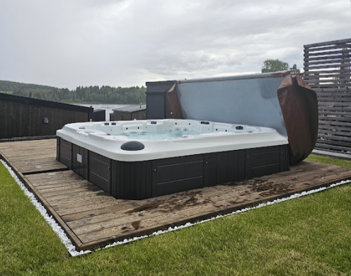
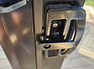

Velkommen!
Så hyggelig at du leser dette, det betyr at du har sjekket inn :-)
Her kommer litt praktisk info.
Bruk av Jacuzzi
- Det er viktig å dusje av seg før dere bader i jacuzzien.
- Hår, svette, sminke, såperester, solkrem etc. er dårlig for vann og filtre.
- Lokket, pleier vi å sette stående på den siden det enten blåser fra eller for å skjerme ev. innsyn, oftest står det som på bildet.

- Er det behov for å stille temperaturen gjøres det ved å trykke å "Tmp"-knappen.
Første trykk viser nåværende innstilling.
Hvert nye trykk vil endre temperaturen med 0,5 grader.
Velg "Light"-knappen for å "lagre" temperaturen (eller ikke gjør noen ting, så velges også valgt temperatur).
- Hver gang man har lagret og trykker "Tmp" på nytt (etter at det har sluttet å blinke), så byttes det om å øke eller senke temperaturen.
- Legg på lokket mellom hvert bad.
- Inne: Unngå våt parkett etter bading/dusjing, går du våt gjennom hytten kan gamle håndklær som ligger i skuffen på badet legges/benyttes på gulvet, bare unngå at det ligger vann som lager merker på tregulvet.
- Det er klor i vannet. Man kan lese mye om hvordan lage det perfekte spa-vann, men kortversjonen basert på erfaring er:
- Når man er ferdig for dagen, eller det er en stund (flere timer) til neste bad:
- Bland 1 ts klor ut i vannet, sånn, ferdig.
Det er likevel litt mer å vite :-)
Det gjøres ved å først løse det opp i vann, bruk litermålet som står sammen med “Klor starter” boksen.
- Begynn med vann i litermålet, deretter klor, rør rundt til mesteparten er løst opp.
- Hell så klorvannet rundt langs kanten av badet eller nær inntaket til filterne.
- Skulle vannet være synlig redusert i kvalitet, benytt i stedet: 2 ts klor.
+ 1 ts “Klar pool” (tilsettes direkte i badet).
(“Klar pool” trenger litt tid på å virke sammen med filterene og bør få "arbeide" til neste dag før man bader..
- La alle de tre boblene kjøre i 5 min, gjerne/helst med lokket delvis på.
(Selv legger jeg lokket helt over men lar det hvile på litermålet slik at det kommer godt med luft inn)
- P.S. Det finnes også "pH-strips" samt "ph-pluss"-pulver for å justere pH-verdien som bør ligge mellom 7,0 og 7,4.
(pH-verdien er viktig for at kloret skal virke optimalt og for å unngå hudirritasjoner).
Vi har aldri hatt behov for å justere ned pH-verdien, kun opp, derfor er bare "pluss"-versjonen tilgjengelig.
Trenger man å justere pH-verdien, så tar det ofte litt tid og det er viktig å ikke ta for mye "pluss" oppi.
Ikke benytt mer enn 1 t-skje av gangen, det kan tilsettes rett i basenget uten å blandes ut på forhånd, men man må så la vannet blandes godt før man måler på nytt.
Tips: Første dag på hytta når et ev. bad er ferdig: Mål pH, er den under 7,0, tilsett 1 t-skje "pluss" (direkte) + klor (utvannet) som nevnt ovenfor, så er det tipp topp neste morgen.
Uteområdet
Alle utemøbler unntatt svart solstol står inne når dere ankommer.
Det er fritt frem å sette ut det dere ønsker av utemøbler, de kan stå ute under hele oppholdet deres.
De kan selvsagt også settes inn igjen; hvis de er helt tørre.
Puter tas alltid inn om kveld/natt for å unngå kondens, eller om det begynner å regne.
Nettet på utsiden av platting ved jacuzzi er til å slappe av i, gjerne med tepper og puter om man vil. Det er tiltenkt barn, maks 70 kg i nettet av gangen og ingen hopping! =)
Skråningen som er dekket av svart plast skal ikke gås på, da kan plasten løsne.
Hvis man mister en fotball eller annet ned skråningen må man altså gå ned og opp på utsiden av plasten.
Ting å leke/gjøre
- Badminton (har vi oftest spilt på veien)
- Fiske (Fiskekort her: https://bit.ly/fiskines)
- Kast på blink med baller (borrelås-baller og sammenfoldet blink ligger på soverommet med skyvedør)
- Strand-leker (i kassen ute ved vannkranen)
- (Fot)ball
- Frisbee
- Fly med drage
Tips
- Stuevinduet står typisk åpent en sommernatt, men unngå det om det er ventet regn, det kan nemlig regne inn.
- Soverom 1: Før leggetid kan det være lurt å åpne vinduet, samt lukke døren til rommet,
slik at sommervarmen fra hytta ikke varmer opp rommet som får kjølt seg litt ned i mellomtiden.
- Gutten pleier å sove på Soverom 1 og nyter da ofte godt av den bærbare viften (ligger på hyllen i Soverom 2) som kan kobles til strøm inne i det tekniske skapet på veggen.
- Det er også mulig å sove på hemsen, nærmest vinduet er det naturlig mest sirkulasjon.
Ta med sengetøy fra en annen seng.
Hvis f.eks. de to som bor på Soverom 1 vil ha hver sin seng / sitt rom og den ene da flytter til hemsen,
så kan den ev. gjøres om til enkeltseng,
bare legg alle madrassene oppå hverandre og lat som du er prins(essen) på erten :-)
Før dere forlater hytten
- Lukk alle 3 vinduer
- Sikre at foldedøren ut til terrassen er:
- Lukket helt igjen.
- Låst med nøkkelen.
- Låst på midten ved å vri låsehåndtaket til låst posisjon

På bildet ser vi låsen i mellomposisjon, slik skal den aldri stå,
det bare illustrerer at man drar den til seg for å så vri 180 grader for å åpne/låse.
- (hvis den ikke låses kan den åpnes av uvedkommende eller sterk vind, selv om låsen med nøkkel er låst.)
- Lås ytterdør og legg nøkkel tilbake i nøkkelboks
- God tur hjem! :-)
Steder å besøke
- Nabostranden (Daskerudstranda)
- Oldtidsveien: Hold til venstre nede ved stranden og følg stien forbi Daskerudstranda, deretter går den
- forbi badeplass med “(stupe)/hoppe-plattform”
- før man ankommer Funnefoss industriarbeidermuseum
- og deretter videre bort til demningen.
- Campingen: Hold til høyre på stranden. (De har en trampoline :-) )
- Funnefoss stadion (3km) har kunstgressbaner som ofte er ledige.
- Nes kirkeruiner (6,6km)
- Golfbaner. Nes Golfklubb eller Lily country club